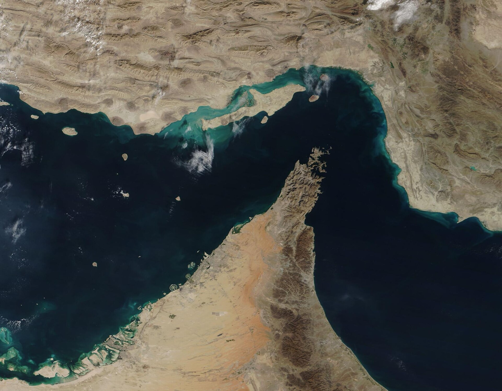

Vol. I · No. 62 · Sunday Special · The week ending July 19, 2026 · ~16 min read
The war over the Strait of Hormuz took its first American lives in months as a month-old truce gave way to open war, Wall Street's banks booked the best trading quarter in their history, and a Beijing lab shipped the most capable open model ever built, all in the week Anthropic began selling its IPO.
The Splash · The World · Strait of Hormuz · cross-spectrum LLLCR
Two US troops are killed in Jordan as the Iran war passes its seventh night

The Strait of Hormuz from orbit, the chokepoint between Iran and Oman now largely closed to traffic by the fighting. — NASA / Wikimedia Commons, public domain
Two American service members were killed in action in Jordan on Friday, and a third is missing, as US and partner forces defended against an Iranian ballistic-missile and drone barrage, US Central CommandInstitutionThe US military command responsible for the Middle East, running the strikes on Iran and the air defense of the Gulf states. It withholds the identities of the dead until families are notified. said. Four more troops were evacuated to hospitals in Jordan and later discharged. They are the first US personnel killed by Iranian fire since March and bring the American death toll to sixteen since the war began in February. President Trump ordered retaliatory strikes at 6 p.m. Saturday, and the US hit Iran for a seventh straight night, striking bridges around Bandar AbbasPlaceIran's largest port on the Gulf and home to the Revolutionary Guard's naval headquarters. US strikes have targeted the bridges and rail links that connect it inland. and a desalination plant that left roughly 10,000 people across 20 villages without water; Iran says US strikes have killed about 50 people this month and injured more than 500.
The week was the collapse of a month-old truce into open war. Iran's lead negotiator said the 60-day memorandum of understandingConceptThe Pakistan-brokered framework that had partially reopened the strait after the February crisis. Iran now calls it effectively suspended; the US calls the ceasefire dead. that had partially reopened the strait was effectively suspended, and Washington reimposed a naval blockade of Iranian ports. Trump briefly imposed, then abandoned, a 20% toll on all Hormuz cargo, letting the blockade do the work; the Islamic Revolutionary Guard CorpsInstitutionIran's elite parallel military, which controls the ballistic-missile force and the Gulf navy. It has led the retaliatory strikes on US-linked bases across the region. answered with waves of missiles and drones at bases in Bahrain, Qatar, Kuwait, Oman, and Jordan, damaging a Kuwaiti oil facility. Traffic through the strait, which normally carries close to a fifth of the world's seaborne oil, has fallen to about a dozen ships a week.
The risk is now spreading beyond one waterway. Reuters reported that Iran has asked the Houthis to ready a closure of the Bab el-MandebPlaceThe strait linking the Red Sea to the Gulf of Aden, carrying roughly 7% of global seaborne energy. A closure there would put a second chokepoint in play alongside Hormuz., the Red Sea gateway that carries another 7% of seaborne energy, if the US strikes its power grid. Brent crudeConceptThe global benchmark oil price. It settled near $85 a barrel this week, its highest since mid-June, as the war premium repriced without a full supply shock. settled near $85 this week, its strongest since mid-June, and a top Guard commander, Mohsen Rezaei, warned Iran would enter "a phase of full-scale offensive operations" if the strikes continued. What began as a fight over freedom of navigation is now a shooting war with two chokepoints and American casualties on the board.
"We hate to see it happen. It's in service to our country."
— President Trump, on NewsNation, July 18
Why it mattersA shooting war over the Gulf's chokepoint that is now killing Americans is the single largest tail risk to energy, inflation, and the rate path a capital-markets desk prices all year; a confirmed second-chokepoint closure would move oil, credit spreads, and the Fed at once.
Framing noteThe Right (Fox News) foregrounds Iran's aggression and the case for degrading its capacity to strike; the Left and center (NPR, Al Jazeera) lead with the American deaths, the civilian toll, and a war lurching toward no exit.
Wall Street's banks post the best trading quarter in their history
Goldman Sachs reported the best quarter in its history on Tuesday: net revenue of $20.3 billion (up 39%), diluted earnings of $20.98 a share against roughly $10.91 a year earlier, and $7.42 billion in trading revenue, a record for any single bank in a three-month period and its third straight record quarter at the equities desk. Investment-banking fees rose 55% to $3.40 billion, led by a 130% surge in equity underwritingConceptThe business of managing share sales, chiefly IPOs and follow-ons. A surge in fees signals a wide-open issuance window, the revenue line most exposed to a market turn.; Goldman ran the SpaceX IPO in late June. Morgan Stanley followed with record revenue of $21.35 billion and a record $6.3 billion equities quarter, raising its dividend 15% and adding a $20 billion buyback; JPMorgan and Bank of America beat as well, topping equities-trading estimates by a combined $4.4 billion.
The through-line is a trading windfall fueled by the AI-driven market boom, and Bloomberg's Matt LevinePersonBloomberg Opinion's finance columnist, whose "Money Stuff" newsletter is the desk's shared read. He framed the bank week as a trading windfall, not a durable franchise. flagged the catch in "Money Stuff": trading is the least durable of bank earnings, a windfall rather than a franchise. Regional lenders capped the week, with Regions beating and Fifth Third posting its first full quarter since closing the $12.7 billion Comerica merger; net interest marginConceptThe spread between what a bank earns on loans and pays on deposits. It is the swing variable for bank profits under the Fed's rate path. remains the swing variable as Chair Warsh holds the policy rate.
Why it mattersA record investment-banking and equities-underwriting quarter tells a capital-markets desk the issuance window is wide open, the exact read that governs whether the Anthropic and OpenAI listings behind it price hot.
Moonshot's Kimi K3 lands as the largest open model ever built
Beijing's Moonshot AI released Kimi K3 on Thursday, a 2.8-trillion-parameter mixture-of-expertsConceptA model design that activates only a fraction of its parameters per query, so a very large model runs at the cost of a much smaller one. It is how Chinese labs undercut US pricing. model with a one-million-token context window, native vision, and an always-on "thinking mode" that the company calls the largest open-source model in the world. Moonshot says K3 performs competitively with Anthropic's Fable 5ConceptAnthropic's frontier model, among the most capable publicly available. Moonshot claims K3 rivals it and beats OpenAI's GPT-5.6 Sol and Anthropic's Opus 4.8. and "substantially outperformed" Opus 4.8 and OpenAI's GPT-5.6 Sol; one independent benchmark, Arena.AI, ranked K3 first of all models. It costs $3 and $15 per million tokens, the priciest Chinese model yet but half of GPT-5.6 Sol, with full weights due July 27 under a modified MIT license.
Fortune called it "a new DeepSeekInstitutionThe Chinese lab whose cheap, capable open model rattled US AI stocks in early 2025. Kimi K3 is being read as the sequel to that shock. shock." It landed the week before the World AI Conference in Shanghai and the same week Anthropic began its IPO roadshow, a pointed reminder that a Chinese open lab is reaching the frontier at a fraction of the price. US developers already route more than 30% of their tokens through cheaper Chinese open weights, and each release tightens the squeeze on the closed labs' pricing power.
Why it mattersA frontier-class open model at half the price attacks the core economic bet behind the pre-IPO US labs, the pricing-power story a capital-markets desk has to weigh before it buys the Anthropic or OpenAI listing.
Anthropic starts selling an IPO that could be the biggest tech listing ever
Bankers began scheduling investor meetings on July 15 ahead of a potential Anthropic IPO that could come as soon as October, though the timing may slip, with Goldman Sachs, Morgan Stanley, and JPMorgan leading. Anthropic confidentially filed its S-1ConceptThe registration statement a company files with the SEC before an IPO. A confidential filing lets it start the process without yet disclosing terms publicly. with the SEC last month. It closed a $65 billion round in May at a $965 billion valuation, its first above OpenAI's $852 billion, and secondary markets now imply $1.05 to $1.15 trillion against a run-rate revenueConceptAnnualized revenue extrapolated from the latest period's pace, a common way fast-growing firms frame scale. Anthropic's is put near $47 billion. near $47 billion.
The scaffolding around the listing tells the same story: the launch of Ode with AnthropicInstitutionA standalone enterprise-AI services firm Anthropic launched July 15 with Blackstone and Hellman & Friedman, aimed at midsize companies stuck "beyond AI pilots.", an enterprise-AI services firm built with Blackstone and Hellman & Friedman, and a run of senior hires read as a company dressing for public markets. A debut would front-run OpenAI, whose own listing has slipped to 2027. Against the pricing pressure from Kimi K3 and the open-weight models, the offering tests whether public investors will pay a trillion-dollar multiple for a lab whose margins the cheaper models are working to undercut.
Why it mattersThis is the capital-markets event of the fall for anyone near the AI trade; a trillion-dollar debut would set the comp for every AI listing behind it and hand its underwriters the league-table print of the year.
The states' wall against the Paramount-Warner Bros. merger holds into a decision week
A federal judge, Araceli Martinez-Olguin of the Northern District of California, heard 80 minutes of argument Friday on a 12-state coalition's temporary restraining orderConceptAn emergency order that would bar the companies from closing for a short window, here up to 28 days, as a prelude to a fuller preliminary-injunction fight. to bar the roughly $110 billion Paramount Skydance takeover of Warner Bros. Discovery, and said she would rule by July 22, the same day the European Union's preliminary review ends. The states, led by California's Rob Bonta, call the deal presumptively illegal under the Clayton ActConceptThe 1914 antitrust statute used to block mergers that may substantially lessen competition. The states point to box-office concentration to invoke it.: the combined company would hold about 27% of the box office and more than 30% of wide-release big-budget theatricals. Paramount told the court the deal will not close by July 22 in any case.
The state suit is one of four fronts. A separate Writers Guild of AmericaInstitutionThe screenwriters' union. Its suit argues the merged studio would be an unlawful monopsony, the single dominant buyer of writers' labor. suit alleges an unlawful monopsony over writers' labor, a Delaware shareholder suit alleges a Trump "side deal" for regulatory approval, and a consumer suit's injunction the same judge denied July 16. Paramount, which cleared DOJ review in June, calls the state case "one of the weakest merger challenges in modern antitrust history" and still targets an end-September close.
Why it mattersThis is the marquee media-M&A and antitrust fight of the year, a live test of state attorneys general defying a federal clearance, and every EASL or capital-markets lawyer near content has to track the July 22 collision with the EU deadline.
The Front · Entertainment & EASL · East Rutherford, New Jersey
Messi returns to MetLife for a World Cup final on home soil
Argentina meets Spain in the FIFA World Cup final on Sunday at MetLife Stadium, with Lionel Messi, 39, back at the venue where he missed a penalty and briefly retired from international football after the 2016 Copa America final. Argentina, riding a 14-match win streak, is trying to become only the second nation after Brazil in 1962 to defend the title; Spain carries a 37-match unbeaten run and six clean sheets into the match. Messi has eight goals and four assists this summer, and Spain's 18-year-old Lamine YamalPersonSpain's teenage forward and the tournament's breakout star, cast as the generational counterweight to Messi in the final. is the generational counterweight.
For Major League SoccerInstitutionThe top US professional soccer league. Messi joined its Inter Miami club in 2023, and the league is using the home World Cup to convert casual viewers into subscribers. the final is a conversion play. Messi's roughly $70 million deal at Inter MiamiInstitutionThe South Florida MLS club co-owned by David Beckham. Messi's contract is the second-highest in the World Cup field; he returns to league play July 22. is the second-highest in the World Cup field, and the league launched a Messi-and-Beckham campaign this week to turn tournament viewers into year-round fans; Messi returns to MLS on July 22 against the Chicago Fire. Get-in prices for the final ran near $8,900, with lower-bowl seats reaching $24,000.
Why it mattersThe biggest sports-business event on US soil this year runs through a South Florida franchise; the MLS conversion bet and Messi's Inter Miami economics are the EASL story underneath the match.
The week's best-of, by department, each item already cleared a daily brief
Artificial Intelligence
Brussels orders Google to open Android to rival AIs.The European Commission adopted two binding measures on July 16: Google must give competing AI assistants Gemini-level access to Android (camera, microphone, on-screen content, wake word, background control) across 11 feature groups by August 2027, and must share search ranking, query, and click data on fair terms from January 2027, a lever read as directly benefiting Anthropic, OpenAI, and Mistral.· Semafor
Gemini 3.5 slips a third time.Bloomberg reported July 16 that Google's Gemini 3.5 Pro was delayed again after falling short of internal goals, still hallucinating and failing to match OpenAI's GPT-5.6 on coding despite a ground-up pretraining rebuild; DeepMind registered stopgap "Flash" variants, a rare stumble for the search giant against the frontier labs.· Bloomberg
China switches off AI companions.China's first national framework on emotionally simulative AI took effect July 15, mandating anti-addiction systems and instant-exit ramps; ByteDance's Doubao and Alibaba's Qwen discontinued user-created AI companion and agent features to comply, an early read on how a major market regulates the parasocial layer of AI.· South China Morning Post
Markets & Deals
The largest buyout ever clears its EU gate.Saudi Arabia's PIF, Silver Lake, and Jared Kushner's Affinity Partners are set to win EU approval for the $55 billion take-private of Electronic Arts as the bloc's preliminary review ends around July 22, with subsidy clearance expected by July 30; the deal, the biggest leveraged buyout on record, now hinges on a US national-security review running to September 28.· Reuters
Csquare prices below range.Brookfield-backed data-center operator Csquare priced its IPO at $21, below the $23-27 range, for roughly $1.05 billion, and debuted on the NYSE on July 16 as CSQR with Brookfield keeping about 67% of the vote; a cautious print that read as a temperature check on the AI-infrastructure trade.· Bloomberg
Netflix beats and drops.Netflix reported Q2 revenue of $12.56 billion (up 13%) and earnings of $0.80 a share on July 16, narrowing full-year guidance, but a Q3 revenue outlook of about $12.86 billion came in below the Street and sent the stock down roughly 8% after hours, the quarter's clearest example of a beat that still disappoints.· Netflix
Law & the Courts
BigLaw's salary silence gets ridiculous.Forty-four days after Milbank opened the 2026 pay round with a $235,000-to-$455,000 scale, historic pace-setter Cravath still had not moved, freezing most firms; only a handful matched, and K&L Gates confirmed a roughly 10% cut to its allied professionals, with David Lat suggesting the "Milbank scale" may be displacing the "Cravath scale."· Above the Law
The Second Circuit revives the Tylenol suits.The Second Circuit on July 13 reinstated more than 500 product-liability suits linking prenatal acetaminophen to autism and ADHD, holding that Judge Denise Cote wrongly excluded the plaintiffs' experts under Daubert; the panel did not decide causation, and Kenvue maintains the drug is safe, but the ruling reopens a mass tort the trial court had dismissed.· Bloomberg Law
DOJ puts prosecutors on a quota.The deputy attorney general's office told all 93 US Attorney offices that line prosecutors must keep at least 25 open matters and is combing the case-management database to flag "disengaged" attorneys, a productivity push critics warn could pressure thin-evidence charging over prosecutorial discretion amid a veteran-attorney exodus.· Bloomberg Law
The World
Zelensky fires his drone architect.President Zelensky dismissed Defense Minister Mykhailo Fedorov, the 35-year-old architect of Ukraine's drone program, after six months amid a clash with the armed-forces chief; more than 1,000 people protested on Kyiv's Maidan chanting "shame," an unusual public rift as nightly Russian barrages continued across the country.· NPR
A Sudanese court sentences the RSF leader to death.A Port Sudan court sentenced Rapid Support Forces leader Hemedti and 15 commanders to death in absentia on July 13 for war crimes and genocide in Darfur, the first conviction of RSF leadership; the ruling is largely symbolic, since the RSF still holds much of western Sudan in a war that has killed more than 150,000 and displaced roughly 12 million.· Middle East Eye
The Gaza truce frays.At least 10 Palestinians, including a 10-year-old, were killed July 14 in what local officials called ceasefire breaches; more than 1,100 have died since the October truce as Israel now controls roughly 70% of Gaza, while Hamas leaders negotiated phase two of the Trump plan (disarmament and withdrawals) in Cairo.· Irish Times
Culture & EASL
Nolan's Odyssey opens huge.Christopher Nolan's "The Odyssey," a Homer adaptation shot largely on IMAX film, opened to $120.5 million domestically, the biggest live-action opening of 2026 and, at roughly $257 million worldwide, the best global launch of Nolan's career; the 95% Rotten Tomatoes original is a data point for the theatrical-versus-streaming argument.· Deadline
The Emmy field takes shape.The 2026 Emmy nominations, announced July 15, put HBO Max's "The Pitt" on top with 25 nods and gave "Hacks" a record-setting 24 in comedy; notable snubs hit "The Bear" leads, Rob Reiner drew a posthumous guest nod, and the ceremony is set for September 14.· Deadline
Lionsgate draws suitors.Lionsgate Studios, the roughly $3.8 billion home of the John Wick and Hunger Games libraries, drew acquisition interest from Banijay and Mediawan and engaged an investment bank to weigh approaches, though it could stay independent, a test of what a mid-cap content library fetches in the current M&A market.· Variety
South Florida · Wall Street South
A busy month on the deal sheets.The week's Real Deal weeklies ran from a $42.5 million Venetian Islands home and a $65.5 million Hammocks apartment complex to Sean "Diddy" Combs selling 1 Star Island Drive for $55 million, a roughly $20 million markup on his 2021 buy, as celebrity and family-office comps kept South Florida's residential top end active.· The Real Deal
A star-studded raise for Miami seawalls.Miami's Kind Designs, which 3D-prints "Living Seawalls," closed a $10 million pre-Series A on July 16 at a roughly $70 million post-money valuation with returning backer Mark Cuban and new investors Adrian Fenty and the NBA's Kyle Kuzma; it reports a $175 million pipeline and a $2 million Navy contract, the kind of emerging-company work anchoring Greenberg Traurig's Miami bench.· Refresh Miami
The Marlins draft a local.The Marlins took Gulliver Prep shortstop Jacob Lombard No. 14 in the MLB Draft, the third time the franchise has spent a first-round pick on a South Florida player; the son of a former big-leaguer, Lombard had been mocked as high as No. 4 before contact questions slid him.· MLB.com
The week in review
Seven days, chronological, drawn from the daily briefs
Mon, Jul 13
The US struck Iran a second straight night as Tehran declared the Strait of Hormuz closed, and Wall Street's Q2 bank-earnings week opened.
Tue, Jul 14
A third night of strikes and a 20% Hormuz toll; Goldman and Bank of America reported as June inflation data landed and Warsh testified, and the Second Circuit revived 500-plus Tylenol-autism suits.
Wed, Jul 15
A fourth night, the toll abandoned for a naval blockade; Goldman posted the best quarter in its history, and a 12-state coalition and the writers' guild sued to block the Paramount-WBD merger.
Thu, Jul 16
A fifth day of strikes as Anthropic began lining up IPO investors and Morgan Stanley posted record revenue; Csquare priced its data-center IPO below range.
Fri, Jul 17
Moonshot's Kimi K3 arrived as the largest open model ever built, on the sixth day of the war, as Netflix beat and dropped and BigLaw kept waiting on Cravath.
Sat, Jul 18
A seventh night severed the bridges around Bandar Abbas, and the $55 billion take-private of Electronic Arts cleared its last European gate.
Sun, Jul 19
Two US service members were killed in Jordan as the war turned deadly for Americans, and Argentina met Spain in the World Cup final at MetLife.
Compiled by Matthew Yellin · mattyellin.com · Est. May 2026 · The Sunday edition gathers the week across every sector; the weekday paper returns Monday.